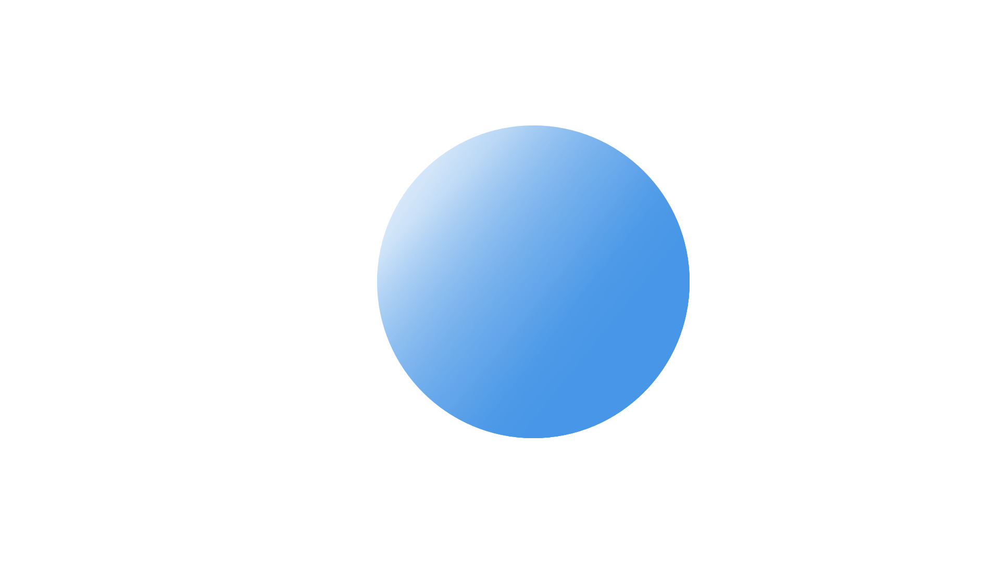

Idk when I look at the sky I tend to be a little more stressed than everyone else here. My first thought is that wow, if we are to believe that space is infinite then I’m looking at infinity right now. And with that there's the amazement but also the idea of infinity is so overwhelming and I’d argue impossible for people to fully understand. I think about how that is what I came from and that is what I will return to but the idea that I will exist in the form of space first for infinity, even outside space and time is a bit existential and doesn’t always feel great.
How often do you look at the sky?
I feel like I’m looking at the sky every time I’m outside, when I’m driving, when I’m walking, when I’m standing around, the sky is always there and quite often it tends to be on my mind.